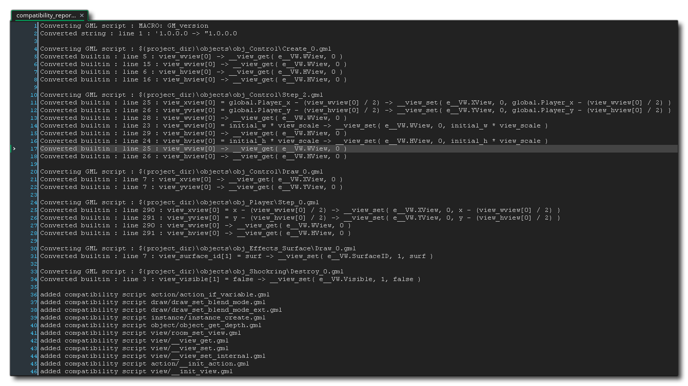

Para los usuarios que vienen de GameMaker: Studio 1.4 puede ser un poco confuso al usar GameMaker Studio 2 al principio ya que se han realizado una serie de cambios en la forma en que se manejan los recursos del proyecto, la edición y la codificación. Estos cambios significan que ni el IDE ni el lenguaje GameMaker (GML) admiten los elementos enumerados a continuación. Sin embargo, eso no significa que no puedas importar juegos creados con GameMaker: Studio 1.4 en GameMaker Studio 2, ¡como puedas! Las funciones enumeradas aquí se convertirán en scripts de compatibilidad
En GameMaker: Studio 1.4 tenía un recurso de fondo separado, donde podía agregar imágenes para usarlas como fondos. En GameMaker Studio 2 todas las imágenes se consideran sprites, y el uso que usted les dé también dependerá de la capa a la que estén asignadas en la sala. Esto significa que ya no existe un recurso de "fondo", y también significa que las siguientes funciones están obsoletas:
draw_background draw_background_ext draw_background_stretched draw_background_stretched_ext draw_background_part draw_background_part_ext draw_background_general draw_background_tiled draw_background_tiled_ext background_name background_exists background_get_name draw_background draw_background_ext draw_background_stretched draw_background_stretched_ext background_get_width background_get_height background_get_transparent background_get_smooth background_get_preload background_get_uvs background_get_texture background_set_alpha_from_background background_create_from_surface background_create_color background_create_colour background_create_gradient background_add background_replace background_add_alpha background_replace_alpha background_delete background_duplicate background_assign background_save background_prefetch background_prefetch_multi background_flush background_flush_multi room_set_background Puede encontrar más información sobre las capas de fondo en la sección del Editor de habitaciones, y para obtener más información sobre las funciones que controlan las capas de fondo mediante el código, consulte Capas de fondo.
Al igual que con los fondos (explicados anteriormente), el recurso de teselas de GameMaker: Studio 1.4 ya no existe, y en su lugar tenemos Conjuntos de GameMaker Studio 2 en GameMaker Studio 2. En GameMaker: Studio 1.4, las teselas usaron un recurso de fondo y se colocaron a diferentes profundidades en el editor de la sala oa través del código, sin embargo, el método utilizado no fue muy flexible y tampoco fue tan eficiente. Para abordar estos problemas, en GameMaker Studio 2 tilesets ahora se crean a partir de un recurso de sprite y pueden tener varias propiedades diferentes (como animación o mosaico automático). Luego se colocan en una capa de mosaico de azulejos dentro del editor de la habitación o mediante el código. Debido a estos cambios, las siguientes funciones ahora están obsoletas:
tile_get_x tile_get_y tile_get_left tile_get_top tile_get_width tile_get_height tile_get_depth tile_get_visible tile_get_xscale tile_get_yscale tile_get_alpha tile_get_background tile_set_visible tile_set_background tile_set_region tile_set_position tile_set_depth tile_set_scale tile_set_blend tile_set_alpha tile_get_count tile_get_id tile_get_ids tile_get_ids_at_depth tile_add tile_exists tile_delete tile_layer_hide tile_layer_show tile_layer_delete tile_layer_shift tile_layer_find tile_layer_delete_at tile_layer_depth room_tile_add room_tile_add_ext room_tile_clear Puede encontrar más información sobre Conjuntos de mosaicos en la sección del manual en el Editor de conjuntos de mosaicos y sobre cómo usarlos en el editor de sala desde la sección sobre Capas de mosaicos. Para obtener más información sobre las funciones que controlan las capas de fondo con código, consulte Capas de Tilemap.
La forma en que se tratan los objetos en GameMaker Studio 2 ha cambiado ligeramente debido a la introducción de capas en el editor de sala. Todavía existe la variable "profundidad", pero ahora solo se usa realmente para compatibilidad y ya no se puede obtener o establecer la profundidad para objetos, solo instancias. Esto hace obsoletas las siguientes funciones:
object_get_depth object_set_depth Puede encontrar más información sobre los recursos de los objetos en la sección del manual en el Editor de Objetos y sobre las funciones que controlan los objetos usando el código de la sección Objetos.
GameMaker: Studio 1.4 tenía dos API de sonido diferentes, una que usaba el legado sound_ funciones (que solo era realmente válida para la plataforma de destino HTML5 ) y la otra que usaba el audio_ funciones. La API de audio se ha mejorado y ampliado en GameMaker Studio 2, lo que hace que las funciones heredadas que figuran a continuación sean obsoletas:
nombre_sonido sound_exists sound_get_name sound_get_kind sound_get_preload sound_exists sound_restore sound_delete sound_play sound_loop sound_stop sound_stop_all sound_isplaying volumen de sonido sound_fade sound_global_volume audio_music_gain audio_music_is_playing audio_new_system audio_old_system audio_pause_music audio_play_music audio_resume_music audio_stop_music sistema de audio Puede obtener más información acerca de los recursos de audio de la sección del manual en el Editor de sonido y sobre las funciones que controlan el audio utilizando el código de la sección Audio.
Al usar modelos 3D o primitivos en GameMaker: Studio 1.4, tenía que usar el d3d_ funciones. Estos usaron una API obsoleta para dibujar y en muchos casos no se relacionaron estrictamente con Direct 3D API, o incluso con el uso de 3D. Con el advenimiento de buffers, matrices y cámaras de vértices en GameMaker Studio 2, las siguientes funciones se han vuelto obsoletas:
d3d_start d3d_end d3d_set_perspective d3d_set_hidden d3d_set_depth d3d_set_lighting d3d_set_shading d3d_set_fog d3d_set_culling d3d_set_zwriteenable d3d_set_projection d3d_set_projection_ext d3d_set_projection_ortho d3d_set_projection_perspective d3d_transform_set_identity d3d_transform_set_translation d3d_transform_set_scaling d3d_transform_set_rotation_x d3d_transform_set_rotation_y d3d_transform_set_rotation_z d3d_transform_set_rotation_axis d3d_transform_add_translation d3d_transform_add_scaling d3d_transform_add_rotation_x d3d_transform_add_rotation_y d3d_transform_add_rotation_z d3d_transform_add_rotation_axis d3d_transform_stack_clear d3d_transform_stack_empty d3d_transform_stack_push d3d_transform_stack_pop d3d_transform_stack_top d3d_transform_stack_discard d3d_transform_vertex d3d_light_define_ambient d3d_light_define_direction d3d_light_define_point d3d_light_enable d3d_primitive_begin d3d_primitive_begin_texture d3d_primitive_end d3d_vertex d3d_vertex_color d3d_vertex_colour d3d_vertex_texture d3d_vertex_texture_color d3d_vertex_texture_colour d3d_vertex_normal d3d_vertex_normal_color d3d_vertex_normal_colour d3d_vertex_normal_texture d3d_vertex_normal_texture_color d3d_vertex_normal_texture_colour d3d_draw_block d3d_draw_cylinder d3d_draw_cone d3d_draw_ellipsoid d3d_draw_wall d3d_draw_floor d3d_model_create d3d_model_destroy d3d_model_clear d3d_model_load d3d_model_save d3d_model_draw d3d_model_primitive_begin d3d_model_primitive_end d3d_model_vertex d3d_model_vertex_color d3d_model_vertex_colour d3d_model_vertex_texture d3d_model_vertex_texture_color d3d_model_vertex_texture_colour d3d_model_vertex_normal d3d_model_vertex_normal_color d3d_model_vertex_normal_colour d3d_model_vertex_normal_texture d3d_model_vertex_normal_texture_color d3d_model_vertex_normal_texture_colour d3d_model_block d3d_model_cylinder d3d_model_cone d3d_model_ellipsoid d3d_model_wall d3d_model_floor Puede encontrar más información sobre los buffers de vértices aquí, más sobre matrices aquí más sobre cámaras aquí y más sobre las funciones de GPU aquí.
Con el advenimiento de las funciones de la cámara en GameMaker Studio 2, significa que una serie de view ya no se requieren variables, específicamente las que se refieren a la vista hacia la sala en lugar de view_port (que todavía se usa). También hay algunas funciones para controlar cómo se muestran las cosas que estaban disponibles en las versiones heredadas de GameMaker: Studio 1.4, que ya no son apropiadas. Estas variables y funciones se enumeran a continuación:
view_object ángulo de visión view_xview view_yview view_hview view_wview view_hborder view_vborder view_hspeed view_vspeed display_set_windows_vertex_buffer_method display_get_windows_vertex_buffer_method display_set_windows_alternate_sync display_get_windows_alternate_sync room_set_view Puede encontrar más información acerca de las cámaras en la sección del manual sobre cámaras y la pantalla.
GameMaker Studio 2 traslada una gran cantidad de funcionalidad incorporada de versiones anteriores a extensiones, lo que significa que las siguientes funciones de soporte de terceros se consideran obsoletas:
ads_enable ads_disable ads_move ads_get_display_width ads_get_display_height ads_interstitial_available ads_interstitial_display ads_setup ads_engagement_available ads_engagement_launch ads_engagement_active ads_event ads_event_preload ads_set_reward_callback playhaven_add_notification_badge playhaven_hide_notification_badge playhaven_position_notification_badge playhaven_update_notification_badge pocketchange_display_reward pocketchange_display_shop analytics_event analytics_event_ext iap_event_queue iap_files_purchased iap_is_downloaded iap_product_files iap_product_status iap_store_status immersion_play_effect immersion_stop Puede obtener las extensiones oficiales de YoYo Games para publicidad y análisis desde su página de Marketplace.
Tanto GameMaker: Studio 1.4 como GameMaker Studio 2 tienen una interfaz visual de arrastrar y soltar (DnD™) para crear sus juegos, sin embargo, la forma en que se maneja en GameMaker Studio 2 es bastante diferente de los métodos anteriores. Anteriormente, todas las acciones de DnD™ tenían su propia función correspondiente que funcionaba "detrás de escena" para obtener los resultados deseados, sin embargo, esto no era muy transparente y se añadía en gastos generales adicionales a las llamadas de función, lo que resultaba en un peor rendimiento. En GameMaker Studio 2 esto ha cambiado y ahora todas las acciones se compilan en código puro (y se pueden mostrar como tales si es necesario), lo que significa que las siguientes funciones de acción están obsoletas:
action_path_old action_set_sprite action_draw_font action_draw_font_old action_fill_color action_fill_colour action_line_color action_line_colour action_highscore action_set_relative acción_movimiento action_set_motion action_set_hspeed action_set_vspeed action_set_gravity action_set_friction action_move_point action_move_to action_move_start action_move_random action_snap action_wrap action_reverse_xdir action_reverse_idir action_move_contact action_bounce action_path action_path_end action_path_position action_path_speed action_linear_step action_potential_step action_kill_object action_create_object action_create_object_motion action_create_object_random action_change_object action_kill_position action_sprite_set action_sprite_transform action_sprite_color action_sprite_colour action_sound action_end_sound action_if_sound action_another_room action_current_room action_previous_room action_next_room action_if_previous_room action_if_next_room action_set_alarm action_sleep action_set_timeline action_timeline_set action_timeline_start action_timeline_stop action_timeline_pause action_set_timeline_position action_set_timeline_speed action_message action_show_info action_show_video action_end_game action_restart_game action_save_game action_load_game action_replace_sprite action_replace_sound action_replace_background action_if_empty action_if_collision action_if action_if_number action_if_object action_if_question action_if_dice action_if_mouse action_if_aligned action_execute_script action_inherited action_if_variable action_draw_variable action_set_score action_if_score action_draw_score action_highscore_show action_highscore_clear action_set_life action_if_life action_draw_life action_draw_life_images action_set_health action_if_health action_draw_health action_set_caption action_partsyst_create action_partsyst_destroy action_partsyst_clear action_parttype_create_old action_parttype_create action_parttype_color action_parttype_colour action_parttype_life action_parttype_speed action_parttype_gravity action_parttype_secondary action_partemit_create action_partemit_destroy acción_partemit_burst action_partemit_stream action_cd_play action_cd_stop action_cd_pause action_cd_resume action_cd_present action_cd_playing action_set_cursor action_webpage action_splash_web action_draw_sprite action_draw_background action_draw_text action_draw_text_transformado action_draw_rectangle action_draw_gradient_hor action_draw_gradient_vert action_draw_ellipse action_draw_ellipse_gradient action_draw_line action_draw_arrow action_color action_colour action_font action_fullscreen action_snapshot acción_efecto Puede encontrar más información sobre el nuevo DnD™ en la sección manual Arrastrar y soltar.
Scripts de compatibilidad
Al importar un proyecto hecho con una versión anterior de GameMaker Studio, cualquiera de las funciones obsoletas que se han utilizado seguirán funcionando ya que han sido transformadas por el IDE automáticamente en comandos de compatibilidad. Lo que sucede es que GameMaker Studio 2 analizará su proyecto para todas las funciones y variables obsoletas que ha utilizado, y luego creará una serie de secuencias de comandos utilizando esos nombres de funciones. Estos scripts contendrán ya sea la nueva función equivalente o un pequeño script de código que realiza la misma acción que la función obsoleta.
Cuando importe por primera vez un proyecto de GameMaker Studio 2, se le mostrará un informe de compatibilidad similar a este: 
El cuerpo principal del informe muestra qué objetos y scripts se han visto afectados y dónde, mientras que al final puede encontrar una lista de los scripts que se han creado para su proyecto. Puede hacer clic en el botón central del mouse  o presione
o presione  en cualquiera de los scripts enumerados en el informe para abrirlo y ver lo que se ha hecho. Tenga en cuenta que si ve algún guión creado con una doble barra inferior antes de su nombre (por ejemplo: __global_object_depths ), estos son scripts creados por el IDE para ayudar con la compatibilidad y no son scripts que se han convertido de funciones obsoletas, por lo que no se deben alterar ya que son necesarios para que funcionen los otros scripts de compatibilidad.
en cualquiera de los scripts enumerados en el informe para abrirlo y ver lo que se ha hecho. Tenga en cuenta que si ve algún guión creado con una doble barra inferior antes de su nombre (por ejemplo: __global_object_depths ), estos son scripts creados por el IDE para ayudar con la compatibilidad y no son scripts que se han convertido de funciones obsoletas, por lo que no se deben alterar ya que son necesarios para que funcionen los otros scripts de compatibilidad.
Cuando haya terminado de revisar el informe de compatibilidad, puede cerrar el área de trabajo, pero si necesita revisar algo dentro del informe, puede encontrarlo nuevamente yendo a la sección Notas del árbol de recursos.
Tenga en cuenta que hay algunas funciones que se han introducido en el lenguaje de GameMaker para garantizar la compatibilidad con los proyectos anteriores y que aparecerán en estos scripts de compatibilidad. Sin embargo, estas funciones nunca deberían usarse en sus propios proyectos. Puede encontrar una lista de estas funciones en la siguiente sección del manual: